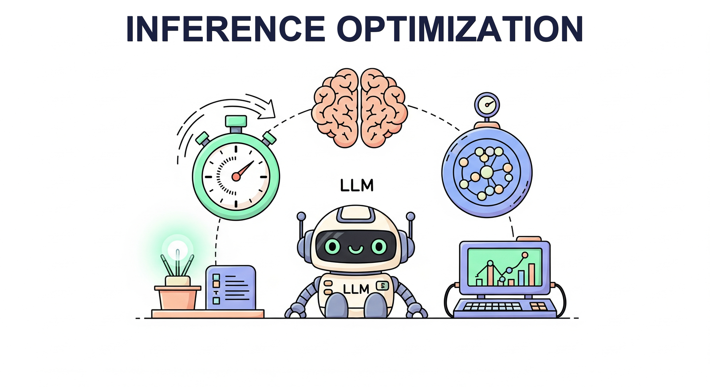

"The fastest code is the code that never runs. The fastest inference is the inference that predicts the answer before it finishes thinking."
Quant, Preemptively Fast AI Agent

So far you know how LLMs are built (Chapter 6), which ones to use (Chapter 7), and how reasoning models trade compute for quality (Chapter 8). This chapter is the engineering chapter: how do you make any of them fast and cheap at inference? Quantization, KV-cache management, continuous batching, speculative decoding, and the serving frameworks (vLLM, TGI, SGLang) that put it all together. By the end you will know why a 70B model can be served on consumer hardware.
Chapter Overview
Training a large language model is only half the challenge (see Chapter 06: Pretraining & Scaling Laws). The other half is making inference fast enough and affordable enough to serve real users. A 70-billion-parameter model consumes over 140 GB of GPU memory at full precision, generates tokens one at a time via autoregressive decoding, and must maintain an ever-growing cache of key/value tensors for each active request. Without optimization, serving LLMs at scale is prohibitively expensive.
This chapter covers the four pillars of inference optimization. First, quantization reduces the precision of model weights (and sometimes activations) so that models fit on fewer GPUs and run faster. Second, KV cache and memory optimization techniques such as PagedAttention, grouped-query attention, and prefix caching eliminate memory waste and boost throughput. Third, speculative decoding breaks the sequential token-generation bottleneck by drafting multiple tokens at once and verifying them in parallel. Finally, serving infrastructure frameworks like vLLM, SGLang, TGI, and TensorRT-LLM tie everything together into production-ready systems that handle thousands of concurrent requests.
By the end of this chapter, you will understand the math behind each technique, know when to apply each one, and have hands-on experience quantizing models, profiling memory, implementing speculative decoding, and deploying high-throughput inference servers.
Even the most capable model is useless if it is too slow or too expensive to serve. This chapter covers quantization, KV-cache optimization, speculative decoding, and other techniques that determine whether your LLM application can meet real-world latency and cost requirements in production (Part VIII).
Prerequisites
- Chapter 04: Transformer Architecture (attention mechanism, multi-head attention)
- Chapter 05: Decoding Strategies (autoregressive generation, sampling methods)
- Chapter 07: Modern LLM Landscape (Llama, Mistral, DeepSeek architecture details)
- Basic familiarity with GPU memory hierarchy and CUDA concepts
- Python, PyTorch, and Hugging Face Transformers library
Learning Objectives
- Explain the mathematics of absmax, zero-point, and per-group quantization; apply GPTQ, AWQ, and bitsandbytes to compress a 7B model to 4-bit
- Calculate KV cache memory requirements and explain how PagedAttention eliminates fragmentation
- Compare MHA, MQA, and GQA architectures (introduced in Chapter 04) and their effect on memory and throughput
- Describe prefix caching, continuous batching, TTT layers, and DeepSeek Sparse Attention
- Implement speculative decoding with rejection sampling and explain why it preserves the target distribution
- Compare EAGLE and Medusa approaches to self-speculative decoding
- Deploy and benchmark inference servers using vLLM, SGLang, TGI, and TensorRT-LLM (complementing the API-based serving covered in Chapter 11)
- Profile and optimize end-to-end latency (TTFT and TPS) under realistic workloads
Sections
- 9.1 Model Quantization Quantization math (absmax, zero-point, per-group), data types (INT8, INT4, FP8, NF4), GPTQ, AWQ, bitsandbytes, calibration strategies, quality degradation analysis. Lab: quantize a 7B model and benchmark precision vs. speed tradeoffs.
- 9.2 KV Cache & Memory Optimization KV cache internals and memory formulas, PagedAttention, MQA/GQA, prefix caching, continuous batching, TTT layers, DeepSeek Sparse Attention. Lab: calculate cache sizes, profile vLLM memory, measure prefix caching throughput.
- 9.3 Speculative Decoding Draft-verify paradigm, acceptance/rejection sampling, EAGLE (feature-level autoregression), Medusa (multi-head prediction), token tree verification. Lab: implement speculative decoding from scratch and benchmark acceptance rates.
- 9.4 Serving Infrastructure vLLM, SGLang, TGI, TensorRT-LLM, LMDeploy, Ollama, llama.cpp, Triton Inference Server, benchmarking methodology (throughput, TTFT, TPS). Lab: deploy vLLM and TGI side by side and benchmark under load.
- 9.5 Model Pruning & Sparsity Structured and unstructured pruning techniques, magnitude and gradient-based criteria, sparsity patterns, sparse matrix computation, and combining pruning with quantization for maximum inference efficiency.
- 9.6 Test-Time Compute & Reasoning Models The test-time compute paradigm, reasoning models (o1/o3, DeepSeek-R1), thinking tokens, process reward models, adaptive compute allocation, and when to invest in inference compute versus larger models. Bridges to Chapter 08.
- 9.7 GPU Kernel Programming for LLM Optimization Custom CUDA and Triton kernels for LLM inference, fused attention implementations, memory bandwidth optimization, kernel profiling, and practical GPU programming patterns for production LLM serving.
What's Next?
In the next chapter, Chapter 10: Interpretability, we look inside the black box with probing, attention analysis, and mechanistic interpretability techniques.